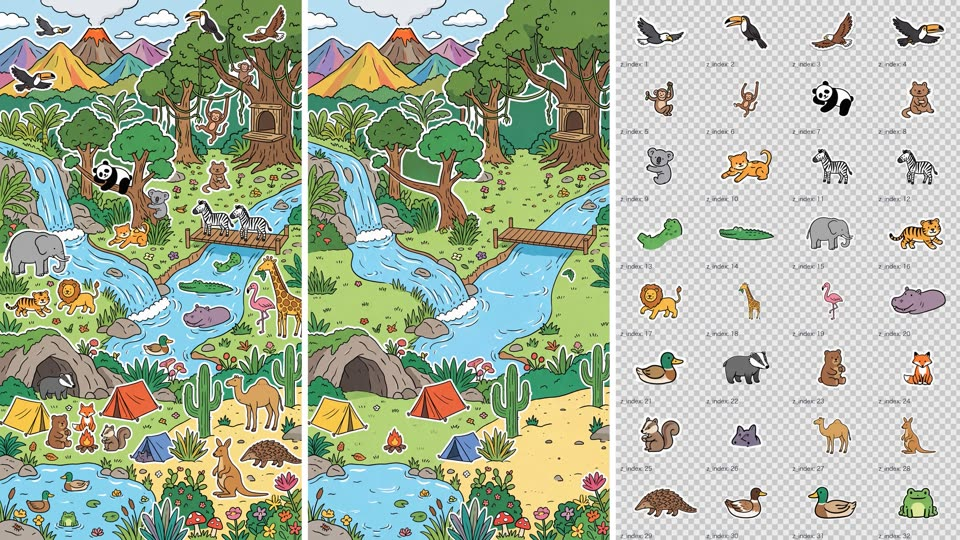

Seedream 5.5 (official): layer decomposition, an illustrated jungle scene split into a clean base plate and 32 transparent animal layers

The official fine-grained layer-decomposition example: one dense illustrated "find the animals" scene goes in; Seedream 5.5 returns a base image with every animal removed and the background naturally filled, plus 32 separate transparent animal layers (eagle, panda, zebras, lion, fox, frog and more, each with its white sticker outline). The request uses layer_decomposition with max_images 40 and text_recognition on. The prompt shows how to direct decomposition: what goes on layers ("each animal… including animals of the same species"), what to preserve (appearance, colours, pose, white outline, original position) and what to do with the gaps ("naturally fill the areas left"). For ads, this turns a key visual into animatable layers for parallax, motion-graphics or Seedance first frames.
Prompt
Separate each animal into a complete, independent layer, including animals of the same species. Preserve the appearance, colors, pose, white outline, and original position of each animal. Keep all non-animal elements in the base image and naturally fill the areas left after the animals are removed.
Our Seedance 2.5 adaptation
[ADAPTED for Seedance 2.5 by Grok Bot; not the creator's prompt. Follows the official BytePlus Seedance 2.5 prompt guide and its official sd25-pe prompt-optimizer skill: parameters only on the API line (not in the prompt body), subject + action + scene, then visuals, camera (move, subject, start, direction, arrival) and sound; only the source's own exclusions are kept.] API: duration 8, ratio adaptive, resolution 1080p, generate_audio true; first_frame = the Seedream 5.5 illustrated scene (base image plus the animal layers placed back in their original positions). 【Subject】The illustrated jungle-and-river scene exactly as in the first frame, keeping the bold outlines, flat colours and each animal's white sticker outline. 【Action】The waterfall and river flow; the eagle glides across the sky; the monkeys swing once; the zebras lift their heads; the campfire flickers; the frog hops once. No animal leaves its area or changes design. 【Camera】A slow vertical pan from the volcano at the top down to the pond at the bottom. 【Visuals】Keep the flat illustrated sticker style; no 3D shading, no new animals, no text. 【Sound】Waterfall, birdsong, jungle ambience, a crackling campfire.
Tags: layer decomposition, base plate + layers, transparent PNG layers, inpainted background, illustration, max_images 40, motion-graphics prep, official example, Seedream 5.5